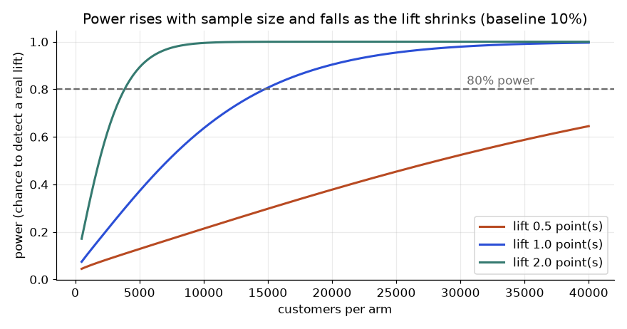
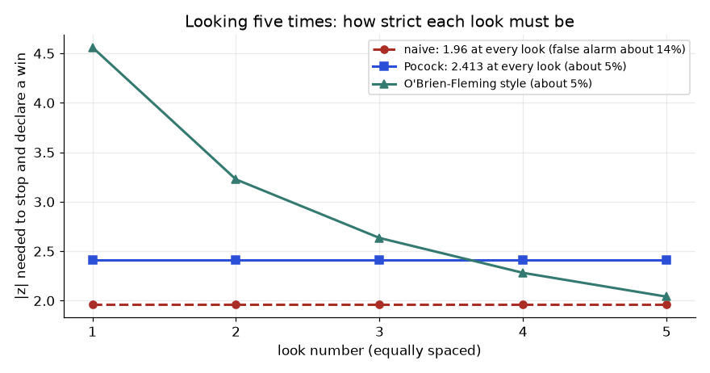

Your product manager says: "We built a new retention offer. Churn looks lower for people who got it. Ship it?" Looking at old data cannot answer that, because the people who got the offer were chosen in some way. An A/B test can answer it. You flip a fair coin for every customer: heads gets the new offer, tails gets the old one. Because the coin ignores everything about the customer, the two groups are alike in every way, including things you never measured. Any later difference in outcome is then caused by the offer. The maths of this is easy. What goes wrong in real companies is the design, the sample size, the stopping rule and the checks. By the end of this chapter you will be able to size a test with real numbers, analyse it, cut its noise with CUPED, detect a broken test with an SRM check, explain why peeking is dangerous, and decide when a bandit is the better tool.
Running example. The churn product from Chapters 1 to 3. The control group (A) gets the standard email. The treatment group (B) gets a new retention offer. The primary metric is "customer places an order in the next 30 days", with a baseline rate of 10%. All data below is synthetic with fixed seeds, and every output was produced by Python (numpy, scipy) in this session.
| Word | Plain meaning | Example in our test |
|---|---|---|
| Hypothesis | A claim you can prove wrong | The new offer raises the 30-day order rate |
| Primary metric | The one number that decides ship or not | 30-day order rate |
| Guardrail metric | A number that must NOT get worse | Unsubscribe rate, refund rate, page latency |
| Randomisation unit | The thing the coin is flipped for | Customer (not email, not session) |
| Exposure criterion | Who counts as "in the test" | Customers who actually received the email |
| Baseline rate | The control group's expected rate | 10% |
| MDE (minimum detectable effect) | The smallest lift worth detecting | +1 percentage point (10% to 11%) |
| Alpha (α) | Chance of a false alarm when there is no effect | 0.05 |
| Power (1 − β) | Chance to catch the effect when it is real | 0.80 |
Why randomise by customer? If you randomise by email send, the same person could get both versions and remember both. The unit must match how the outcome is measured. Our outcome is per customer, so the coin is per customer.
Why a guardrail? A new offer can raise orders by giving a huge discount, while profit falls. Guardrails are your seatbelt.
For a yes/no metric, with control rate p1, treatment rate p2, p̄ = (p1 + p2)/2:
n per arm = ( z_α/2 · √(2·p̄·(1−p̄)) + z_β · √(p1(1−p1) + p2(1−p2)) )² / (p2 − p1)²z_α/2 is the normal-curve cut-off for the false alarm rate. For α = 0.05 (two-sided) it is 1.96. z_β is the cut-off for power. For power 0.80 it is 0.8416. A handy rule: n ≈ 16 · p(1−p) / δ² where δ is the absolute lift you want to detect. The 16 assumes a two-sided test at α = 0.05 with 80% power (it is 2 × (1.96 + 0.84)² = 15.7, rounded up); Section 7.6 shows the constant for a one-sided test or 90% power.
Problem 7.1.1 (tiny numbers) Using the rule of thumb, how many customers per arm to detect a lift from 10% to 11%?
| Formula | n ≈ 16 · p(1−p) / δ² |
|---|---|
| Plug in | 16 × 0.10 × 0.90 / (0.01)² |
| Compute | 16 × 0.09 = 1.44, and 0.01² = 0.0001, so 1.44 / 0.0001 = 14,400 |
| Answer | About 14,400 customers per arm. |
| Check | The exact formula in the next problem gives 14,751, close to the rule. |
| Why it matters | In a meeting you can do this on paper and tell the PM "we need about 15 thousand per arm" before anyone writes code. |
Problem 7.1.2 (exact formula) Same test, full formula.
| Formula | the formula above, with p1 = 0.10, p2 = 0.11, z_α/2 = 1.96, z_β = 0.8416 |
|---|---|
| Plug in | p̄ = 0.105. First term: 1.96 × √(2 × 0.105 × 0.895) = 1.96 × √0.18795 = 1.96 × 0.43353 = 0.8497. Second term: 0.8416 × √(0.10×0.90 + 0.11×0.89) = 0.8416 × √0.1879 = 0.8416 × 0.43347 = 0.3648 |
| Compute | (0.8497 + 0.3648)² = 1.2145² = 1.4750, then 1.4750 / 0.0001 = 14,750 |
| Answer | Python gives 14,750.8, so use 14,751 per arm, 29,502 in total. |
| Check | We simulated this: 2,000 fake experiments with exactly 14,751 per arm and a real lift 10% to 11%. The test found a significant result in 80.1% of them. That is the 80% power we asked for. |
| Why it matters | The formula is not magic. You can confirm it by simulation, and you should when the metric is unusual. |
import math
from scipy import stats
def n_per_arm(p1, p2, alpha=0.05, power=0.8):
za = stats.norm.ppf(1 - alpha/2); zb = stats.norm.ppf(power)
pbar = (p1 + p2) / 2
num = (za*math.sqrt(2*pbar*(1-pbar)) + zb*math.sqrt(p1*(1-p1) + p2*(1-p2)))**2
return num / (p2 - p1)**2
print(n_per_arm(.10, .11)) # 14750.79
print(n_per_arm(.10, .12)) # 3840.85
print(n_per_arm(.10, .105)) # 57762.65Look at the three outputs. Halving the lift (1 point to 0.5 point) needs about four times the customers (14,751 to 57,763), because n depends on 1/δ². Doubling the lift (1 point to 2 points) needs about a quarter (3,841).
Lift you want to detect (δ) Customers per arm (10% baseline)
2.0 points 3,841 ####
1.0 point 14,751 ###############
0.5 point 57,763 ##########################################################Duration. Say you get 2,000 eligible customers per day and need 29,502 in total. That is 14.75 days. Do not stop at day 15. Round up to full weeks (here, 3 weeks), because Saturday customers behave differently from Tuesday customers. A test that covers 2 Saturdays and 1 Tuesday is biased.
Problem 7.1.3 (combine ideas) Your traffic is 1,200 eligible customers per day. The baseline is 10%. The PM says "we only care if the offer gives at least a 2-point lift". How long must the test run?
| Step 1 | n per arm for 10% to 12% is 3,841 (Python output above). |
|---|---|
| Step 2 | Total = 2 × 3,841 = 7,682 customers. |
| Step 3 | Days = 7,682 / 1,200 = 6.4 days. |
| Step 4 | Round up to full weeks: 7 days. |
| Answer | One full week is enough for a 2-point lift. If the PM later says "1 point matters", you need 29,502 / 1,200 = 24.6 days, so 4 weeks. |
| Check | 7 days × 1,200 = 8,400, which is above 7,682. Good. |
| Why it matters | The MDE conversation is really a business conversation: "how small a win is worth the weeks of waiting?" |
Experiment platforms at product companies run this calculation for every test. As a data scientist you own the design doc: hypothesis, primary and guardrail metrics, unit, MDE, duration, and the decision rule written BEFORE the test starts.
Check yourself
After the test ends, you compare two rates. The two-proportion z-test asks: if the real rates were equal, how surprising is a gap this big? The p-value is that surprise probability. A confidence interval (CI) gives a range of lifts that fit the data. Remember Chapter 4.4: a p-value does not say how big the effect is; the CI and the effect size do.
Problem 7.2.1 Control: 1,000 of 10,000 customers ordered. Treatment: 1,120 of 10,000. Analyse.
| Formula | z = (pB − pA) / SE, with pooled rate p = (cA + cB)/(nA + nB), SE = √( p(1−p)(1/nA + 1/nB) ) |
|---|---|
| Plug in | pA = 0.100, pB = 0.112, p = 2,120 / 20,000 = 0.106 |
| Compute | SE = √(0.106 × 0.894 × 0.0002) = √0.00001895 = 0.004353. z = 0.012 / 0.004353 = 2.756. Two-sided p-value = 0.0058. |
| Answer | The absolute lift is 1.2 points, the relative lift is 1.2 / 10 = 12%. The 95% CI for the absolute lift (using the unpooled SE of 0.004353) is 0.35 to 2.05 points. We reject "no effect" at α = 0.05. |
| Check | The CI does not include 0, which agrees with p < 0.05. |
| Why it matters | Report both: "+1.2 points (+12% relative), 95% CI 0.35 to 2.05 points". The interval tells the PM the win could be small. |
Absolute vs relative lift. Always state both and say which. "12% lift" sounds large, but it is 1.2 extra orders per 100 customers.
CUPED means Controlled-experiment Using Pre-Experiment Data. Each customer has a pre-period value X (for example spend in the 30 days before the test) and an outcome Y (spend during the test). Because the coin was fair, X has the same average in both groups. So we can safely adjust:
θ = Cov(Y, X) / Var(X)
Y_adj = Y − θ · (X − mean(X))The adjusted outcome keeps the same treatment effect but has smaller variance: Var(Y_adj) = Var(Y) · (1 − ρ²), where ρ (rho) is the correlation between X and Y.
Problem 7.2.2 We simulate 20,000 customers (seed 42). Pre-period spend X is skewed (gamma shaped). During-test spend Y = 0.8·X + noise + 100, and the offer truly adds ₹15 to spend. Compare the plain and CUPED estimates.
import numpy as np, math
rng = np.random.default_rng(42); N = 20000
pre = rng.gamma(2, 150, N)
noise = rng.normal(0, 200, N)
y0 = 0.8*pre + noise + 100
T = rng.integers(0, 2, N)
y = y0 + 15*T
def diff_se(y, T):
a, b = y[T==1], y[T==0]
return a.mean()-b.mean(), math.sqrt(a.var(ddof=1)/len(a) + b.var(ddof=1)/len(b))
print(diff_se(y, T))
theta = np.cov(y, pre)[0,1] / pre.var(ddof=1)
yc = y - theta*(pre - pre.mean())
print(theta, np.corrcoef(y, pre)[0,1])
print(diff_se(yc, T))Real output:
plain : diff 18.58, SE 3.71
theta : 0.793, correlation rho 0.649
CUPED : diff 17.82, SE 2.82
Var(Y) 68,959 -> Var(Y_adj) 39,888 ratio 0.578 = 1 - rho^2 (0.5784)
SE ratio 0.760Related methods. Stratification splits customers into groups (such as new vs old users) and averages the group effects. Regression adjustment fits Y ~ T + X and reads the coefficient on T. They are close cousins of CUPED and give similar results with one or many covariates.
CUPED is built into most experimentation platforms. Interviewers love it because it shows you understand variance, not just p-values.
Check yourself
You planned a 50/50 split. SRM means the real group sizes differ from the plan by more than chance allows. It nearly always means a bug: one arm crashes more often, bots are filtered in one arm, or a redirect drops users. When SRM shows up, the results are not valid, even if they look great.
Test it with a chi-square test: χ² = Σ (observed − expected)² / expected. With two groups (1 degree of freedom), the 0.001 p-value alarm level is a common choice.
Problem 7.3.1 100,000 customers, planned 50/50. Arm A has 50,550 and B has 49,450. Is there SRM?
| Formula | χ² = Σ (O − E)² / E |
|---|---|
| Plug in | E = 50,000 for each. (50,550 − 50,000)² / 50,000 + (49,450 − 50,000)² / 50,000 |
| Compute | 550² = 302,500, so 302,500 / 50,000 = 6.05 for each arm. Sum = 12.1. p-value = 0.0005. |
| Answer | p = 0.0005 is below 0.001, so we declare SRM. A 1.1% imbalance looks small, but with 100,000 customers chance almost never makes it. |
| Check | A different split, 50,120 vs 49,880, gives χ² = 0.576 and p = 0.45, which is normal. |
| Why it matters | Teams that skip this check ship wrong results with confidence. Investigate the assignment code and logging first. |
Peeking means checking the p-value every day and stopping the first time it is below 0.05. It sounds harmless, but each look is another chance for noise to cross the line.
Problem 7.3.2 Simulate 20,000 A/A tests (both arms identical at 10%, so no real effect), 10,000 customers per arm, with 10 equally spaced looks. How often do we see a "significant" result?
import numpy as np
rng = np.random.default_rng(2); sims = 20000; n = 10000
c = np.arange(1, 11) * 1000
peek = end = poc = 0
for _ in range(sims):
a = np.cumsum(rng.binomial(1, .1, n))[c-1]
b = np.cumsum(rng.binomial(1, .1, n))[c-1]
p = (a+b)/(2*c); se = np.sqrt(2*p*(1-p)/c)
z = np.abs((b-a)/c/se)
peek += (z > 1.96).any(); end += z[-1] > 1.96; poc += (z > 2.555).any()
print(peek/sims, end/sims, poc/sims)Real output: 0.18885 0.0454 0.0483.
You have three honest options: (a) fix the sample size and look once; (b) use a sequential test whose thresholds are built for repeated looks (Pocock, O'Brien-Fleming, or always-valid p-values from mSPRT); (c) use a Bayesian analysis with a pre-set decision rule, but note that Bayesian stopping also needs care and simulation to check its error rates.
| Pitfall | What it looks like | Fix |
|---|---|---|
| Novelty / primacy effect | Lift is big in week 1 then fades (or the opposite) | Run 2+ weeks, plot lift by day, look at new vs returning users |
| Interference / network effects | Treated users affect control users (marketplaces, social) | Randomise by cluster, region or time block |
| Many metrics and segments | 20 metrics, one is "significant" | One primary metric; correct for multiple tests (Chapter 4.3) |
| Simpson's paradox in rollouts | Traffic mix differs by day, so pooled result flips | Keep the ratio constant over the whole test; analyse by segment |
| Ratio metrics | Click-through = clicks / sessions, where the unit is the user | Delta method or bootstrap by user |
| Heavy-tailed revenue | A few huge buyers swing the mean | Winsorise (cap the top 1%), use bootstrap, or CUPED |
Ratio metrics and the delta method. If the metric is total clicks divided by total sessions, but users are the random unit, then sessions from one user are not independent. A naive SE treats each session as independent and is too small. The delta method uses Var(ratio) ≈ Var(Y − r·S) / (n · mean(S)²).
Problem 7.3.3 5,000 users, sessions per user S = Poisson(4) + 1, clicks per user ~ Binomial(S, 0.2) (seed 5). Overall CTR = 0.1990. Compare the SE.
| Naive | √(r(1−r)/total sessions) = 0.002537 |
|---|---|
| Delta method | 0.002529 |
| Answer | Here they agree closely, because clicks within a user are independent in our simulation. In real data, a heavy user who clicks a lot makes the naive SE too small, and the delta method is the safe choice. |
| Check | Our data was generated with independent clicks, so agreement is expected. We did not simulate user-level correlation here. |
| Why it matters | When in doubt, bootstrap by user: resample users, not sessions. |
The first thing a good experimentation team does with a new result is the SRM check and a "trust" checklist. Interview question: "A test shows +5% with p = 0.001 but the arms have 52% / 48% traffic. What do you do?" Answer: do not read the result; find the SRM cause.
Check yourself
Thompson sampling keeps a belief for each arm's success rate (a Beta distribution: starts at "1 success, 1 failure"). Each turn it draws one random value from each belief, plays the arm with the biggest draw, and updates that arm with the result. Arms that look good get played more, but every arm still gets some chances.
Problem 7.4.1 Three offers with true order rates 10%, 12%, 11% (unknown to us). 10,000 customers. Compare an equal split with Thompson sampling, averaged over 100 repeats (seed 3).
import numpy as np
true = np.array([.10, .12, .11]); T_ = 10000
def run(policy, rng):
s = np.ones(3); f = np.ones(3); rew = 0; pulls = np.zeros(3)
for t in range(T_):
arm = int(np.argmax(rng.beta(s, f))) if policy == "ts" else t % 3
r = rng.random() < true[arm]; rew += r
s[arm] += r; f[arm] += 1 - r; pulls[arm] += 1
return rew, pullsReal output:
equal split : orders 1096.4, customers per arm [3334, 3333, 3333]
Thompson : orders 1161.4, customers per arm [1015, 6828, 2158]
best possible (always the 12% offer): 1200When NOT to use a bandit. A bandit gives you less data about the losing arms, so you cannot estimate the exact lift with a tight CI. It also struggles when the effect changes over time (a Monday winner may lose on Saturday) and when the outcome arrives late (30-day order rates). Use a standard A/B test when you must give a clear causal estimate, report it to leadership, or learn WHY. Use bandits for continuous optimisation of many cheap variants (headlines, banners, notification times).
Instead of a p-value, you compute "the probability that B is better than A", from the two Beta beliefs. It answers the question the PM actually asks. It still needs a stopping rule fixed in advance.
Write the decision rule before the test:
| Result | Action |
|---|---|
| Primary metric significantly up, guardrails flat | Ship |
| Primary flat, CI excludes your MDE, guardrails flat | Do not ship; the idea does not work at the size we care about |
| Primary flat, CI wide | Inconclusive; run longer or iterate on the idea |
| Primary up, a guardrail significantly worse | Do not ship; investigate the trade-off with the owner |
Problem 7.4.2 In Problem 7.2.1 the lift is +1.2 points (CI 0.35 to 2.05) and the offer costs ₹30 per customer. A new order is worth ₹400 margin. Is it worth shipping?
| Step 1 | Extra orders per customer = 0.012 (the point estimate). |
|---|---|
| Step 2 | Extra margin per customer = 0.012 × 400 = ₹4.80. |
| Step 3 | Cost per customer = ₹30. |
| Answer | Net = 4.80 − 30 = −₹25.20 per customer. Even at the top of the CI (0.0205 × 400 = ₹8.20), we lose money. The test is "statistically significant" and still a bad decision. |
| Check | The break-even lift is 30 / 400 = 7.5 points, much larger than anything in the CI. |
| Why it matters | Significance is not value. Always convert lift to money. |
Keep an experiment log: one row per test with hypothesis, dates, sample size, result with CI, decision and what you learned. Over time the log shows which ideas work, and prevents repeating failed ones. The standard book on all this is Trustworthy Online Controlled Experiments by Kohavi, Tang and Xu.
Interviewers ask "design an experiment for feature X". Walk through: hypothesis, unit, metrics (primary, guardrails), MDE and n, duration, checks (SRM), analysis plan, decision rule. You now have every item.
Check yourself
Many headline metrics are ratios: click-through rate is clicks per session, revenue per session, orders per visit. The unit you randomise is the user, but the denominator counts sessions. Users with many sessions contribute many rows, and a user's sessions are not independent (a person who likes clicking clicks in most sessions). If you treat each session as an independent coin flip you get a standard error that is too small and too many false wins.
Let each user have clicks c and sessions s. The metric is R = Σc / Σs = c̄ / s̄. A first-order Taylor expansion (the delta method) gives the variance of a ratio of two means across n users:
To test a difference between arms, compute R and Var(R) in each arm, add the two variances and take the square root for the standard error of the difference.
Problem 7.5.1 Five users in one arm have sessions 1, 2, 4, 3, 10 and clicks 0, 1, 1, 1, 4. Find the CTR and its delta-method standard error.
| Ratio | R = 7 / 20 = 0.35. |
|---|---|
| Moments | s̄ = 4, Var(s) = 12.5, Var(c) = 2.3, Cov(c, s) = 5.25 (sample versions with n − 1). |
| Numerator | 2.3 − 2 × 0.35 × 5.25 + 0.35² × 12.5 = 2.3 − 3.675 + 1.53125 = 0.15625. |
| Divide | n·s̄² = 5 × 16 = 80, so Var(R) = 0.15625 / 80 = 0.001953 and SE = 0.0442. |
| Check | A bootstrap over users (code below) gives 0.0485. With only 5 users the first-order approximation is rough; with thousands of users the two agree closely. |
import numpy as np
# Tiny hand example: 5 users in one arm
s = np.array([1, 2, 4, 3, 10.0]) # sessions
c = np.array([0, 1, 1, 1, 4.0]) # clicks
n = len(s)
R = c.sum() / s.sum()
ms, mc = s.mean(), c.mean()
vs, vc = s.var(ddof=1), c.var(ddof=1)
cov = np.cov(c, s, ddof=1)[0, 1]
var_R = (vc - 2 * R * cov + R**2 * vs) / (n * ms**2)
print("R", R, "var_c", vc, "var_s", vs, "cov", cov)
print("delta var", round(var_R, 5), "se", round(var_R**.5, 4))
rng = np.random.default_rng(0)
idx = rng.integers(0, n, (20000, n))
boot = c[idx].sum(1) / s[idx].sum(1)
print("bootstrap se", boot.std().round(4))
R 0.35 var_c 2.3 var_s 12.5 cov 5.25
delta var 0.00195 se 0.0442
bootstrap se 0.0485Problem 7.5.2 Now a realistic arm of 20,000 users. Compare the naive session-level standard error with the delta method and a user-level bootstrap.
import numpy as np
rng = np.random.default_rng(1)
n = 20000
# heavy users have many sessions AND a user-specific click rate (users are clustered)
rate = rng.beta(2, 18, n) # user click propensity, mean 0.10
sess = rng.poisson(1, n) + 1 + (rng.random(n) < 0.05) * rng.poisson(30, n)
clicks = rng.binomial(sess, rate)
R = clicks.sum() / sess.sum()
# naive: treat every session as independent Bernoulli
se_naive = np.sqrt(R * (1 - R) / sess.sum())
# delta method at user level
ms = sess.mean()
cov = np.cov(clicks, sess)[0, 1]
var_R = (clicks.var(ddof=1) - 2 * R * cov + R**2 * sess.var(ddof=1)) / (n * ms**2)
# bootstrap users
idx = rng.integers(0, n, (400, n))
boot = clicks[idx].sum(1) / sess[idx].sum(1)
print("CTR", round(R, 4), "sessions per user", round(ms, 2))
print("naive SE", round(se_naive, 5), " delta SE", round(var_R**.5, 5), " bootstrap SE", round(boot.std(), 5))
print("naive understates SE by factor", round(var_R**.5 / se_naive, 2))
CTR 0.0963 sessions per user 3.48
naive SE 0.00112 delta SE 0.00146 bootstrap SE 0.00152
naive understates SE by factor 1.3How to read it. The naive standard error is about 23% too small (the delta SE is 1.30 times larger). Using the naive number would turn a borderline result into a false win. The delta method and the bootstrap agree with each other (0.00146 and 0.00152). The gap grows with the clustering of sessions inside users and with how unequal the session counts are.
A neat equivalent view is linearisation: replace each user's pair (c, s) with c − R·s where R is the control ratio. The treatment effect on that single per-user number is, to first order, the effect on the ratio, and you can use ordinary t-tests, CUPED and sample-size formulas on it. This is how most experimentation platforms implement ratio metrics.
Section 7.1 sized a yes/no metric. The rule of thumb n ≈ 16 p(1−p)/δ² assumes a two-sided 5% test and 80% power (2·(1.96 + 0.84)² = 15.7, rounded to 16). For other settings change the 15.7: a one-sided 5% test needs about 12.4 (2·(1.645+0.842)²), and 90% power at two-sided 5% needs about 21.0 (2·(1.96+1.282)²). In general, for a metric with standard deviation σ per user, n per arm = 2·(zα/2 + zβ)²·σ² / δ².
Problem 7.6.1 Three sample-size calculations. (a) Revenue per user has σ = 120 rupees; detect +2 rupees. (b) The same with CUPED where ρ = 0.5. (c) A ratio metric (CTR 0.10) whose linearised per-user value has σ = 0.35 (assumed); detect +0.005. (d) The 10% to 11% binary case under three settings.
from scipy import stats
za, zb = stats.norm.ppf(0.975), stats.norm.ppf(0.8)
k = 2 * (za + zb) ** 2
print("2*(za+zb)^2 =", round(k, 3))
# continuous: revenue per user mean 50, sd 120, detect +2
sd, delta = 120, 2
print("continuous n per arm", round(k * sd**2 / delta**2))
# CUPED with rho = 0.5 cuts variance by 25%
print("with rho 0.5:", round(k * sd**2 * (1 - 0.25) / delta**2))
# ratio metric: delta-method variance per user of the linearised metric
# CTR 0.10, sd of linearised value per user = 0.35, detect +0.005
print("ratio n per arm", round(k * 0.35**2 / 0.005**2))
# one-sided 5% and power 90% for the binary 10% vs 11% case
def n_bin(p1, p2, alpha, power, two=True):
za = stats.norm.ppf(1 - alpha / (2 if two else 1)); zb = stats.norm.ppf(power)
pb = (p1 + p2) / 2
return (za*(2*pb*(1-pb))**.5 + zb*(p1*(1-p1)+p2*(1-p2))**.5)**2 / (p2-p1)**2
print("binary 10 to 11:", round(n_bin(.10,.11,.05,.8)), round(n_bin(.10,.11,.05,.8,False)), round(n_bin(.10,.11,.05,.9)))
2*(za+zb)^2 = 15.698
continuous n per arm 56512
with rho 0.5: 42384
ratio n per arm 76919
binary 10 to 11: 14751 11619 19747| (a) by hand | 15.698 × 120² / 2² = 15.698 × 14,400 / 4 = 56,513 per arm (the code rounds the unrounded constant and prints 56,512). |
|---|---|
| (b) by hand | CUPED multiplies the variance by (1 − ρ²) = 0.75, so n falls by a quarter: 42,384. |
| (c) by hand | 15.698 × 0.35² / 0.005² = 15.698 × 0.1225 / 0.000025 = 76,920 (code: 76,919). |
| (d) | 14,751 for two-sided 5% with 80% power. A one-sided test needs 11,619 (21% fewer), and 90% power needs 19,747 (34% more). |
Reading the answers. Continuous revenue metrics are heavy-tailed, so σ is large relative to a small lift, and they need far more users than a conversion rate. This is why teams cap outliers (winsorise at the 99th percentile), use CUPED, or test a conversion proxy.

How to read it. Find where each curve crosses the dashed line: that x value is the sample size for that lift (about 3,800, 14,750 and 57,800 per arm). A curve only reaches the top of the chart when n is large for that lift. A test that stops at 10,000 per arm has only about 64% power for the 1-point lift and about 21% for 0.5 points.
CUPED is one case of regression adjustment: add pre-experiment covariates to a regression of the outcome on treatment. The treatment coefficient is still unbiased because assignment is random, and the standard error shrinks by √(1 − R²) of the covariates. Post-stratification instead computes the effect inside each segment (for example free and premium customers) and averages with population weights; it removes the variance that comes from random imbalance in segment mix.
Problem 7.6.2 Simulate 8,000 customers with a pre-period spend and a premium flag, true effect +3. Repeat the random assignment 600 times and compare the spread of three estimators.
import numpy as np
rng = np.random.default_rng(3)
n = 8000
pre = rng.gamma(2, 25, n) # last quarter spend
seg = (rng.random(n) < 0.3).astype(int) # 1 = premium segment
y0 = 0.6 * pre + 40 * seg + rng.normal(0, 30, n)
def one_trial(rng):
t = rng.integers(0, 2, n)
y = y0 + 3 * t + rng.normal(0, 5, n) # true effect +3
plain = y[t == 1].mean() - y[t == 0].mean()
# post-stratified by segment
est = 0
for g in (0, 1):
m = seg == g
est += m.mean() * (y[m & (t == 1)].mean() - y[m & (t == 0)].mean())
# regression adjustment: y ~ t + pre + seg
X = np.c_[np.ones(n), t, pre - pre.mean(), seg - seg.mean()]
beta = np.linalg.lstsq(X, y, rcond=None)[0]
return plain, est, beta[1]
res = np.array([one_trial(rng) for _ in range(600)])
print("mean estimate (truth 3):", res.mean(0).round(2))
print("empirical SE: plain, stratified, regression:", res.std(0).round(2))
print("variance vs plain:", (res.var(0) / res.var(0)[0]).round(2))
mean estimate (truth 3): [3.1 3.06 3.04]
empirical SE: plain, stratified, regression: [0.9 0.79 0.65]
variance vs plain: [1. 0.77 0.52]How to read it. All three are centred near the truth (3), so none is biased. The spread differs: stratifying by segment cuts the variance to 77% of the plain estimator, and regression on pre-spend and segment cuts it to 52%, the same as using a sample about twice as large. Covariates must be measured before assignment; one measured after can be changed by the treatment and will bias the estimate.
A real test tracks 20 or 30 metrics. At a 5% level each, a null test shows about one "significant" metric by luck. Two standard fixes: Bonferroni (use α/m for each of m metrics; strict, controls the chance of any false alarm) and Benjamini-Hochberg (BH), which controls the expected share of false discoveries among the metrics you call significant (the false discovery rate, FDR).
Problem 7.7.1 Ten metrics have p-values 0.001, 0.008, 0.012, 0.041, 0.049, 0.20, 0.30, 0.50, 0.70, 0.90. Apply Bonferroni and BH at 5%.
| Bonferroni | Threshold 0.05 / 10 = 0.005. Only 0.001 passes: 1 metric. |
|---|---|
| BH step 1 | Sort the p-values (already sorted). The k-th smallest is compared with k × 0.05 / 10: 0.005, 0.010, 0.015, 0.020, 0.025, ... |
| BH step 2 | k = 1: 0.001 ≤ 0.005 yes. k = 2: 0.008 ≤ 0.010 yes. k = 3: 0.012 ≤ 0.015 yes. k = 4: 0.041 ≤ 0.020 no. k = 5: 0.049 ≤ 0.025 no. |
| BH step 3 | Take the largest k that passes: k = 3. Reject the three smallest p-values. |
| Answer | Bonferroni finds 1, BH finds 3. BH is less strict because it accepts a few false findings in exchange for power. |
import numpy as np
p = np.array([0.001, 0.008, 0.012, 0.041, 0.049, 0.2, 0.3, 0.5, 0.7, 0.9])
m, q = len(p), 0.05
order = np.argsort(p); ps = p[order]
thr = q * np.arange(1, m + 1) / m
ok = ps <= thr
k = np.max(np.where(ok)[0]) + 1 if ok.any() else 0
print("BH thresholds", thr.round(3)[:5], "largest k", k, "rejected", ps[:k])
print("Bonferroni rejects", (p <= q / m).sum())
adj = np.minimum.accumulate((ps * m / np.arange(1, m + 1))[::-1])[::-1]
print("BH adjusted p-values", adj.round(3))
BH thresholds [0.005 0.01 0.015 0.02 0.025] largest k 3 rejected [0.001 0.008 0.012]
Bonferroni rejects 1
BH adjusted p-values [0.01 0.04 0.04 0.098 0.098 0.333 0.429 0.625 0.778 0.9 ]A/B testing assumes each user's outcome depends only on their own assignment (no interference, the "stable unit" assumption). That fails in marketplaces (drivers, riders, inventory), social products (friends see each other's changes) and auctions (ad budgets). Then user-level randomisation can show a lift that does not exist after launch.
Problem 7.8.1 A market has 100,000 users and only 45,000 delivery slots. Each user requests a slot with probability 0.5 (control) or 0.6 (new design). Requests are served at random up to capacity. Compare the user-level A/B lift with the true effect of launching to everyone, and with a daily switchback.
| Truth, hand | All control: 50,000 requests, 45,000 slots, so 90% served and 0.5 × 0.9 = 0.45 orders per user. All treatment: 60,000 requests, 75% served, 0.6 × 0.75 = 0.45. Launching changes nothing: the extra requests just fight for the same slots. |
|---|---|
| A/B, hand | Half and half: requests = 100,000 × (0.25 + 0.30) = 55,000, so 45,000 / 55,000 = 81.8% served. Control: 0.5 × 0.818 = 0.409. Treatment: 0.6 × 0.818 = 0.491. The test says +0.082 (+20%). |
| Why | Treated users steal slots from control users. The comparison between arms is not a comparison between worlds. |
import numpy as np
rng = np.random.default_rng(0)
N, C, p0, p1 = 100000, 45000, 0.5, 0.6
def served(requests): return min(1.0, C / requests) # share of requests that get a slot
# truth by rolling out to everyone
ctrl = p0 * served(N * p0) ; trt = p1 * served(N * p1)
print("global control orders per user", round(ctrl, 3), " global treatment", round(trt, 3), " true effect", round(trt - ctrl, 3) + 0.0)
# user-level A/B inside the same market
treated = rng.random(N) < 0.5
req = rng.random(N) < np.where(treated, p1, p0)
sv = served(req.sum())
order = req & (rng.random(N) < sv)
print("A/B measured: control", round(order[~treated].mean(), 3), "treatment", round(order[treated].mean(), 3),
"lift", round(order[treated].mean() - order[~treated].mean(), 3))
# switchback: whole market alternates by day, 28 days
days = np.arange(28); tday = days % 2 == 1
o = []
for t in tday:
r = rng.random(N) < (p1 if t else p0)
o.append((r & (rng.random(N) < served(r.sum()))).mean())
o = np.array(o)
print("switchback estimate", round(o[tday].mean() - o[~tday].mean(), 3) + 0.0)
global control orders per user 0.45 global treatment 0.45 true effect 0.0
A/B measured: control 0.409 treatment 0.492 lift 0.083
switchback estimate 0.0How to read it. The A/B test reports +0.083 orders per user (a 20% lift) when the true launch effect is zero. The switchback, which flips the whole market between control and treatment on alternating days, recovers the zero. Its cost is fewer independent units (28 days instead of 100,000 users), so it needs a longer run and care about carry-over from one day to the next (drop a washout period) and weekday effects (alternate so each weekday appears in both arms).
| Design | Randomise | Use when | Main cost |
|---|---|---|---|
| User-level A/B | Person | No sharing of supply, no network | Biased under interference |
| Cluster randomisation | Friend groups or cities | Social or local effects stay inside the cluster | Few clusters, less power |
| Switchback | Time blocks for the whole market | Marketplaces, pricing, dispatch | Carry-over, few units |
| Geo experiment | Matched regions | Ads and offline effects, no user-level tracking | Needs a synthetic control analysis (Chapter 8) |
Plot the daily lift. A novelty effect starts high and decays as users get used to a change; a primacy effect starts low as users learn the new layout and then rises. A two-week test can mislead in either direction. For decisions with long-term consequences, keep a small holdout (for example 1% of users who never receive the feature for months) and compare it with everyone else. The cost is that 1% of users miss the feature; the gain is a clean estimate of long-run impact.
Section 7.3 showed that peeking at a fixed-sample test inflates false positives. The answer is not "never look". It is to use a method whose error rate is correct because it expects you to look. Two families: group-sequential designs (a few planned looks with stricter cut-offs) and always-valid tests such as the mixture sequential probability ratio test (mSPRT), which allows continuous monitoring.
Problem 7.9.1 Plan 5 equally spaced looks at α = 0.05. How bad is naive testing at 1.96, and what cut-offs fix it?
import numpy as np
rng = np.random.default_rng(5)
paths = 400000
z = np.cumsum(rng.normal(size=(paths, 5)), axis=1) / np.sqrt(np.arange(1, 6)) # z-stat at each of 5 equal looks
naive = (np.abs(z) > 1.96).any(1).mean()
pocock = (np.abs(z) > 2.413).any(1).mean()
ob = 2.04 * np.sqrt(5 / np.arange(1, 6))
obf = (np.abs(z) > ob).any(1).mean()
print("naive 1.96 at every look:", round(naive, 4))
print("Pocock 2.413 at every look:", round(pocock, 4))
print("O'Brien-Fleming style bounds", ob.round(3), "false positive rate", round(obf, 4))
print("independent-looks formula 1-0.95^5 =", round(1 - 0.95**5, 4))
naive 1.96 at every look: 0.1413
Pocock 2.413 at every look: 0.0505
O'Brien-Fleming style bounds [4.562 3.226 2.634 2.281 2.04 ] false positive rate 0.0493
independent-looks formula 1-0.95^5 = 0.2262How to read it. Naive testing at five looks gives 14.1%, not the 22.6% from 1 − 0.955. That formula assumes the five looks are independent, but the z-statistic at look 2 includes the data from look 1, so the looks are positively correlated and the true inflation is smaller. Treat 22.6% as an upper bound. A constant Pocock cut-off of 2.413 restores 5%. An O'Brien-Fleming style plan (4.56, 3.23, 2.63, 2.28, 2.04) also gives 5%, and keeps the final look nearly as sensitive as a fixed test, so it is the usual choice: it makes it hard to stop early on a lucky start, yet costs almost no power at the end.

How to read it. The red dashed line is the cut-off many people use without thinking: 1.96 at every look. The green line starts very strict and relaxes towards the final look. Early on, only an enormous effect can stop the test.
With a normal metric of known variance 1 and a prior of N(0, τ²) on the effect, the mixture likelihood ratio after n paired observations with mean x̄ is Λ = √(1/(1+nτ²)) · exp( n²τ²x̄² / (2(1+nτ²)) ). Reject the null the first time Λ ≥ 1/α. Because Λ is a martingale under the null, the chance it ever crosses 1/α is at most α, however often you look.
import numpy as np
rng = np.random.default_rng(2)
paths, n, tau2, alpha = 4000, 3000, 0.01, 0.05
x = rng.normal(size=(paths, n)) # paired differences under the null, variance 1
k = np.arange(1, n + 1); xbar = np.cumsum(x, 1) / k
lam = np.sqrt(1 / (1 + k * tau2)) * np.exp(k**2 * tau2 * xbar**2 / (2 * (1 + k * tau2)))
print("share of null paths that EVER cross 1/alpha:", (lam.max(1) >= 1 / alpha).mean().round(4))
d = x + 0.1 # true effect 0.1 sd
xbar = np.cumsum(d, 1) / k
lam = np.sqrt(1 / (1 + k * tau2)) * np.exp(k**2 * tau2 * xbar**2 / (2 * (1 + k * tau2)))
hit = (lam >= 1 / alpha).argmax(1)[(lam >= 1 / alpha).any(1)] + 1
print("with a real effect of 0.1 sd: stop rate", (lam >= 1/alpha).any(1).mean().round(3), "median stop at n =", int(np.median(hit)))
share of null paths that EVER cross 1/alpha: 0.0355
with a real effect of 0.1 sd: stop rate 0.996 median stop at n = 727How to read it. Under the null only 3.6% of paths ever cross the line, below 5% even with 3,000 looks (the guarantee is "at most 5%", and it is conservative). With a true effect of 0.1 standard deviations, 99.6% of paths stop, with a median stopping time of 727 observations. The price of always-valid monitoring is some power compared with a fixed-sample test of the same length, and the choice of τ matters: pick it near the effect sizes you care about.
| Item | Formula or pattern |
|---|---|
| Sample size (rule of thumb) | n ≈ 16·p(1−p)/δ² per arm |
| Sample size (exact) | (z_α/2·√(2p̄(1−p̄)) + z_β·√(p1q1+p2q2))² / δ² |
| z-test | z = (pB−pA)/√(p(1−p)(1/nA+1/nB)) |
| CUPED | Y_adj = Y − θ(X − mean X), θ = Cov(Y,X)/Var(X), variance × (1−ρ²) |
| SRM | χ² = Σ(O−E)²/E, alarm if p < 0.001 |
| Peeking fix | Pocock z about 2.555 for 10 looks; or mSPRT |
| Ratio metric | Delta method or user-level bootstrap |
| Bandit | Thompson: draw from Beta(s,f), play the max, update |
1. (easy) Control rate 20%, you want to detect a 2-point lift. Use the rule of thumb for n per arm. Answer: 16 × 0.2 × 0.8 / 0.02² = 2.56 / 0.0004 = 6,400 per arm.
2. (easy) True or false: a test that finds "no significant difference" proves the change does nothing. Answer: False. It may be underpowered; check the CI and compare to the MDE.
3. (easy) Traffic is 500 eligible customers per day and you need 8,000 in total. How many days, rounded to full weeks? Answer: 8,000 / 500 = 16 days, round up to 3 weeks (21 days).
4. (medium) A: 200 of 2,000 ordered. B: 240 of 2,000. Compute the absolute lift and the z-statistic. Answer: pA = 0.10, pB = 0.12, lift 2 points. Pooled p = 0.11, SE = √(0.11 × 0.89 × (2/2000)) = √0.0000979 = 0.009894. z = 0.02 / 0.009894 = 2.02, p about 0.043. Barely significant; the unpooled 95% CI is about 0.06 to 3.94 points, so it nearly touches 0.
5. (medium) Planned 50/50. Observed 10,300 vs 9,700 (total 20,000). SRM check? Answer: E = 10,000. χ² = 300²/10,000 × 2 = 9 × 2 = 18, p about 0.00002. SRM: do not trust the result.
6. (medium, find the bug) An analyst computes CUPED using "number of orders during the test" as X. What is wrong? Answer: X is measured after treatment and may be affected by it, so adjusting removes part of the real effect and biases the estimate. X must be pre-test.
7. (medium, what is the output) Correlation between X and Y is 0.8. By what fraction does CUPED cut the SE? Answer: Variance factor = 1 − 0.64 = 0.36. SE factor = √0.36 = 0.6, so SE falls by 40%.
8. (hard) You look at a test at 10 equally spaced points and stop at the first p < 0.05. Roughly how often do you declare a false win on an A/A test? Answer: About 19% in our simulation (18.9%), not 5%.
9. (hard, scenario) Your offer lifts orders by 0.8 points (CI 0.1 to 1.5), costs ₹10 per customer, and an order is worth ₹300 margin. Ship? Answer: 0.008 × 300 = ₹2.40 versus a cost of ₹10, net −₹7.60. Even the top of the CI (0.015 × 300 = ₹4.50) loses money. Do not ship; break-even needs 10/300 = 3.3 points.
10. (interview) "We ran a test for 3 days and the p-value is 0.01. Can we ship?" Answer: Not yet. 3 days misses the weekly cycle, and if the sample size was fixed at 3 weeks, stopping early because p is low is peeking. Check SRM, the planned n, and guardrails. Also check novelty by looking at lift by day.
11. (interview) "When would you use a bandit instead of an A/B test?" Answer: Many cheap variants, a quick feedback metric, and a high cost of showing weak options (headlines, notification times). Use A/B when you need a precise, defensible effect estimate or outcomes are delayed.
12. (easy) State the assumptions behind n ≈ 16 p(1−p)/δ². Answer: Two-sided test at α = 0.05, 80% power, and a binary metric with variance about p(1−p) in both arms. For one-sided 5% replace 16 by about 12.4, and for 90% power by about 21.
13. (medium) Revenue per user has σ = 80 rupees. Detect +1.5 rupees at two-sided 5%, 80% power. Per arm? Answer: n = 15.698 × 80² / 1.5² = 15.698 × 6,400 / 2.25 = 44,653 per arm.
14. (medium) With the same test, a pre-period covariate has correlation 0.6 with revenue. New sample size? Answer: Variance factor 1 − 0.36 = 0.64, so n = 44,653 × 0.64 = 28,578 per arm.
15. (medium) Twenty metrics are all truly unaffected. What is the chance that at least one has p < 0.05, if they were independent? Under Bonferroni? Answer: 1 − 0.9520 = 0.642. With Bonferroni each metric uses 0.05/20 = 0.0025, so the chance is about 1 − 0.997520 = 0.049.
16. (hard) p-values 0.003, 0.010, 0.020, 0.030, 0.40 for five metrics. Which are significant under BH at 5%? Answer: Thresholds k × 0.05/5 = 0.01, 0.02, 0.03, 0.04, 0.05. 0.003 ≤ 0.01 yes; 0.010 ≤ 0.02 yes; 0.020 ≤ 0.03 yes; 0.030 ≤ 0.04 yes; 0.40 ≤ 0.05 no. Largest passing k = 4, so the first four are significant. Bonferroni (0.01) would keep only two (0.003 and 0.010).
17. (hard) (find the flaw) A ride-hailing team randomises riders 50/50 to a coupon and sees a 15% rise in trips. After a full launch trips are flat. Give the likely reason and a better design. Answer: Interference through shared supply: coupon riders take drivers that control riders would have used, so the arms are not independent worlds. Use a switchback by city-hour or randomise whole cities, and compare to the user-level result to size the bias.
18. (hard) (interview) "Your CTR test has 200,000 sessions per arm but only 20,000 users per arm. The z-test on sessions gives p = 0.03. Do you ship?" Answer: Not on that number. Randomisation was by user and sessions are clustered inside users, so the session-level SE is too small (in our simulation by about 23%). Recompute at user level with the delta method or a user bootstrap, check SRM at user level, and decide on the corrected interval.
You are my patient, practical professor. I am a working professional at an Indian MNC moving into data science, studying one hour a day. Topic: sample size, power and MDE for an online A/B test with a yes/no metric. Explain step by step with small numbers, using the idea of how many timed deliveries you need before an average is trustworthy. Then give me a baseline of 8% and an MDE of 0.5 points and walk me through the full calculation. Finish by asking me three questions, one at a time, and check my answers before moving on.
You are my patient, practical professor. I am a working professional moving into data science. Topic: CUPED variance reduction in A/B tests. Explain the idea with a classroom analogy, derive why variance falls by (1 - rho squared), and show a tiny numeric example I can verify by hand. Then give me 8 graded exercises, from easy to hard, without solutions, including one where the covariate is wrongly chosen. After I answer, grade me honestly.
You are my patient, practical professor. I am a working professional moving into data science. Topic: sample ratio mismatch (SRM) and peeking in A/B tests. Quiz me one question at a time. Use realistic numbers (group sizes, chi-square, p-values, number of looks). After each answer, tell me what I got right, what I missed, and explain the correct reasoning in simple English. Start easy and get harder over 10 questions.
You are my patient, practical professor. I am a working professional moving into data science. Topic: reviewing an A/B test design document. Here is my design doc: [PASTE HERE]. Review it against this checklist: hypothesis, primary metric, guardrails, randomisation unit, exposure criteria, MDE, sample size, duration, SRM check, analysis plan, decision rule. Point out each gap in plain English, explain why it matters, and suggest a fix with example numbers.
You are my patient, practical professor. I am a working professional moving into data science and preparing for interviews. Topic: experimentation (A/B testing, bandits, sequential testing). Run a mock interview with me. Ask one question at a time, such as "design an experiment for a new checkout flow" or "when would you use a bandit". After each answer, score me from 1 to 5, show a model answer, and ask a follow-up. Do 8 rounds, then summarise my weak spots and give me a study plan.